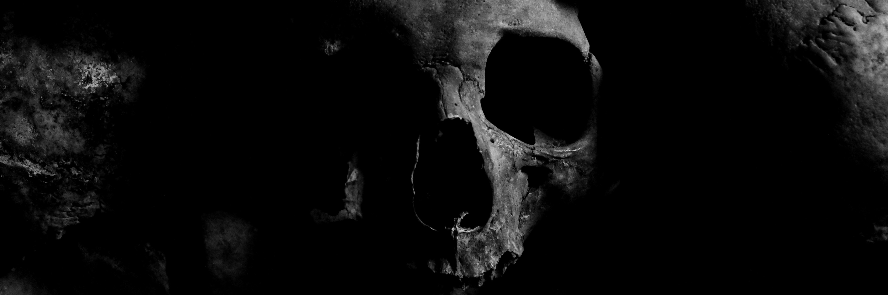

Sam tells you that there is going to be an assassination of the Prime Minister taking place in Sydney at 1800 at the Sydney Opera House and they have to stop that from happening. If this assassination happens it would stop him from providing a resource that would cause the resource to be not discovered.